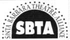

| Playbill Online Broadway and more - news, tickets, and trinkets from the ultimate theatre source. |
||
| Theater Magazine Are you looking for exciting new plays and critical debate? Theater Magazine is America's most informative and provocative publication for and about the contemporary stage. |
||
| The Tony Awards® The Tony Awards® are brought to you annually by the American Theatre Wing and the League of American Theatres and Producers. |
||
| Santa Barbara Theatersports Welcome to the homepage of Santa Barbara Theatresports (TM)! This page is dedicated primarily to the Improv Outlet, its members, and patrons. |
||
 |
Santa Barbara Theater The Santa Barbara Theater Alliance was formed to advocate for, market, and promote the Santa Barbara performing arts community. |
|